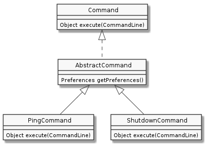

The eclim architecture is pretty straight forward. Commands issued by a user in vim are relayed via nailgun to the running eclim daemon and the proper command implementation is then located and executed.
Here is a diagram showing the sequence in a bit more detail:
![skinparam monochrome true
hide footbox
box "Vim"
participant "<command>.vim"
participant eclim.vim
end box
participant nailgun
box "Eclipse / Eclimd"
participant Main
participant Services
participant "<Command>"
end box
"<command>.vim" -> eclim.vim : eclim#Execute
activate eclim.vim
eclim.vim -> nailgun
activate nailgun
nailgun -> Main : main
activate Main
Main -> Services : getCommand
Services --> Main
Main -> "<Command>" : execute
"<Command>" --> Main
Main --> nailgun
nailgun --> eclim.vim
eclim.vim --> "<command>.vim"
deactivate Main
deactivate nailgun
deactivate eclim.vim](../_images/plantuml-f419a915c4ad28e12f655023e794a42dd9c99c73.png)
The commands which are executed on the eclimd side are also fairly simple. They accept an object containing the command line parameters passed into the eclim invocation and then return an object (String, Collection, etc) which is converted to a json response. Below is a simple class diagram showing the hierarchy of a couple typical commands.

Another important aspect of eclim’s architecture is support for plugins. Plugins for eclim are bundled as eclipse plugins with their auto start attribute set to false. When the eclim daemon starts it will locate and load any eclipse plugin with an ‘org.eclim.’ prefix.
When a plugin is loaded, eclim will locate the plugin’s required resources provider and invoke its initialize method which will then inject its resources (messages, command options, etc) into eclim and register any new commands.
Here is graphical representation of this process:
![skinparam monochrome true
hide footbox
participant "<Eclipse>"
participant EclimApplication
participant PluginResources
participant Services
"<Eclipse>" -> EclimApplication : start
activate EclimApplication
EclimApplication -> EclimApplication : loadPlugins
activate EclimApplication
EclimApplication -> PluginResources : initialize
activate PluginResources
PluginResources -> Services : addPluginResources
PluginResources -> Services : registerCommand
PluginResources --> EclimApplication
deactivate PluginResources
deactivate EclimApplication
deactivate EclimApplication
EclimApplication --> "<Eclipse>"](../_images/plantuml-028b1ccc82f764e7b59353179725e5e615177504.png)